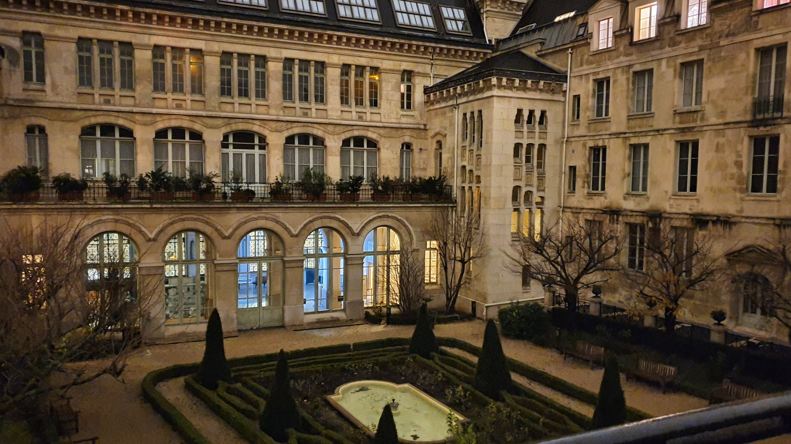
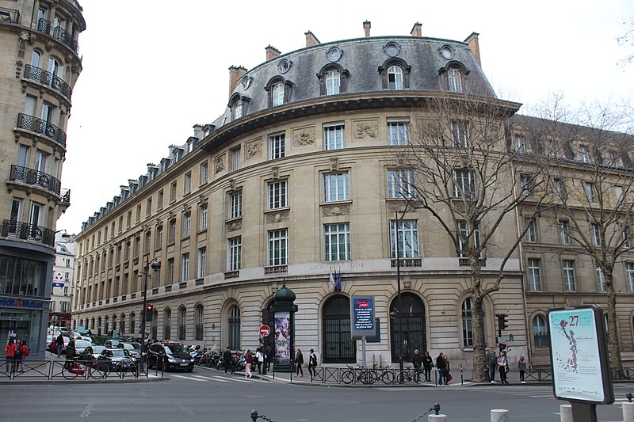
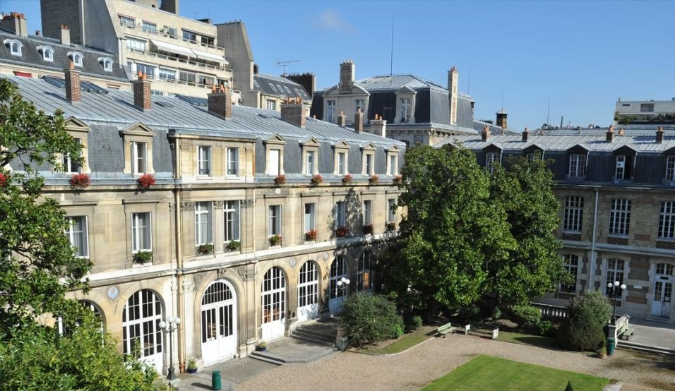

NEXT
STEP
SPECIALITE
RECOMMENDATION
CARTE
Carte des prépas MP2I à Paris
Louis Le Grand

Chance d'admission
Le lycée Louis-le-Grand est un établissement d'enseignement secondaire et supérieur public français. Il est situé le long de l'ancien cardo de Lutèce, au 123 de la rue Saint-Jacques, dans le 5e arrondissement de Paris. Son origine remonte au xvie siècle, puisqu'il fut fondé en 1550 comme collège jésuite dans l'hôtel parisien de Guillaume du Prat, évêque de Clermont (d'où son nom d'origine : collège de Clermont). Il est reconstruit de 1885 à 1888.
Saint Louis

Chance d'admission
Le lycée Saint-Louis est un établissement public local d'enseignement situé au 44, boulevard Saint-Michel, dans le 6e arrondissement de Paris (Quartier latin). Il a comme particularité d'être le seul lycée français public exclusivement consacré aux classes préparatoires aux grandes écoles (CPGE). De plus, les classes sont exclusivement scientifiques à l'exception de la classe ECS.
Janson de Sailly

Chance d'admission
Le lycée Janson-de-Sailly (JDS ou Janson) figure parmi les plus grandes cités scolaires de France avec 3 850 élèves et 635 membres du personnel dont près de 300 enseignants permanents en 2015-2016. C'est aussi l'un des lycées qui accueille le plus grand nombre d'élèves de classes préparatoires aux grandes écoles en France : 1 270 élèves répartis en trente classes.Le bâtiment principal (site Janson) est situé dans le 16e arrondissement de Paris, au 106, rue de la Pompe et s'étend sur 3,5 hectares.
Fénelon Sainte-Marie
Chance d'admission
Le lycée Fénelon Sainte-Marie est un établissement d'enseignement scolaire privé catholique situé dans le 8e arrondissement de Paris. Il accueille les élèves de la 6e à la terminale (8 classes par niveau), ainsi que des maternelles, primaires et des classes supérieures (classes préparatoires et BTS).
Paul Valéry
Chance d'admission
Le lycée Paul-Valéry, appelé aussi familièrement PV, est un établissement public d'enseignement général et technologique du 12e arrondissement de Paris situé 38, boulevard Soult. C'est un lycée à vocation scientifique, économique, littéraire et artistique, réputé notamment pour ses sections de formation aux métiers du cinéma et de l'audiovisuel qui furent les premières créées en France en 1983.
Accès
Classement Prépas MP2I
4%
I.Louis Le Grand
9%
II.Hoche
9%
III.Saint Louis
13%
IV.Janson de Sailly
26%
V.Fénelon Sainte-Marie
45%
VI.Paul Valery